Manuali i softuerit Waterjet
Një botim i Donatoni Macchine S.r.l.
Versioni i softuerit: 0.0
Versioni i manualit: 0.0
Data:
Informacione të përgjithshme
Informacionet që përmban ky dokument vlejnë vetëm për versionet e softuerit të paraqitura në faqen e titullit.
Mund të ndodhë që jo të gjitha funksionet e produktit të përshkruhen në këtë dokumentacion; në këto raste, Donatoni Macchine S.r.l. nuk është e detyruar t’i garantojë këto funksione ose t’i ruajë ato në versionet e ardhshme.
Qëllimi i manualit
Ky manual përmban udhëzimet e përdorimit të nevojshme për njohjen e mirë të softuerit Waterjet dhe ndërfaqes Parametrix, si edhe informacione të dobishme për zgjidhjen e keqfunksionimeve.
Funksionimi i rregullt, jetëgjatësia dhe ekonomia e përdorimit të vetë makinës varen nga respektimi i udhëzimeve të përshkruara në këtë manual.
Manuali i përdorimit dhe mirëmbajtjes së makinës dhe ky manual i softuerit duhet të jenë gjithmonë të disponueshëm në vendin e instalimit të impiantit, në një vend të sigurt dhe lehtësisht të arritshëm. Nëse njëri prej tyre humbet, kontaktoni përgjegjësin e shërbimit të parandalimit dhe mbrojtjes.
Mosrespektimi i udhëzimeve të përshkruara në këtë manual, pakujdesia dhe përdorimi i keq ose i papërshtatshëm i makinës mund të shkaktojnë anulimin nga ana e Prodhuesit të garancisë së dhënë për makinën dhe, për më tepër, mund të mos arrihen përfitimet për të cilat është ndërtuar kjo makinë.
DONATONI MACCHINE SRL është gjithmonë në dispozicion për të siguruar asistencë teknike të shpejtë dhe të saktë, si dhe gjithçka që mund të jetë e dobishme për funksionimin më të mirë dhe arritjen e rendimentit maksimal të makinës.
Prodhuesi rezervon të drejtën që, sipas gjykimit të vet, të ndryshojë këtë botim dhe të dhënat që ai përmban, nëse e konsideron të nevojshme për përmirësimin teknik ose tregtar të produktit.
Ruajtja e manualit
Ky Manual i Softuerit duhet të ruhet gjatë gjithë jetës operative të makinës, edhe në rast transferimi te palë të treta.
Për ruajtjen e duhur të Manualit të Softuerit rekomandohet:
Përdoreni Manualin në mënyrë që të mos dëmtoni tërësisht ose pjesërisht përmbajtjen e tij; në veçanti, rekomandohet të mos e lini Manualin pa mbikëqyrje gjatë përdorimit dhe ta vendosni në vendin e caktuar menjëherë pas përfundimit të konsultimit;
Mos hiqni, grisni ose rishkruani për asnjë arsye pjesë të Manualit;
Ruajeni Manualin në zona të mbrojtura nga lagështia, nxehtësia dhe faktorë të tjerë mjedisorë që mund të cenojnë integritetin ose jetëgjatësinë e tij;
Në rast humbjeje ose dëmtimi të të gjithë ose një pjese të përmbajtjes së këtij Manuali, kërkojini Prodhuesit një kopje të këtij dokumentacioni.
Përdoruesit
Ky dokument përmban informacione të destinuara për:
Operatorin e makinës
Teknikun e autorizuar për të kryer asistencën
Përdorimi i dokumentit
Dokumenti ndahet në kapituj që përshkruajnë:
Njohjen e strukturës së softuerit dhe të ndërfaqes Parametrix
Funksionet e makinës në modalitetin Manual dhe Ekzekutim
Funksionet e marrjes së imazheve
Konfigurimin dhe përdorimin e funksionit Hydrofinish
Përshkrimin e seksioneve kryesore të softuerit
Njoftimi i problemeve
Për çdo problem që mund të shfaqet gjatë studimit të këtij dokumenti, kontaktoni shërbimin e asistencës së Donatoni Macchine S.r.l.
Kur hapet, aplikacioni D-WATERJET shfaqet me ndërfaqen e mëposhtme:

Shiriti i sipërm
Ky shirit ndodhet në pjesën e sipërme të çdo faqeje të aplikacionit.
Mirëmbajtjet | |
Cilësimet | |
Asistenca | |
 | Minimizo |
Fik / Rinis |
Cilësimet
Faqja e cilësimeve shfaqet si më poshtë:
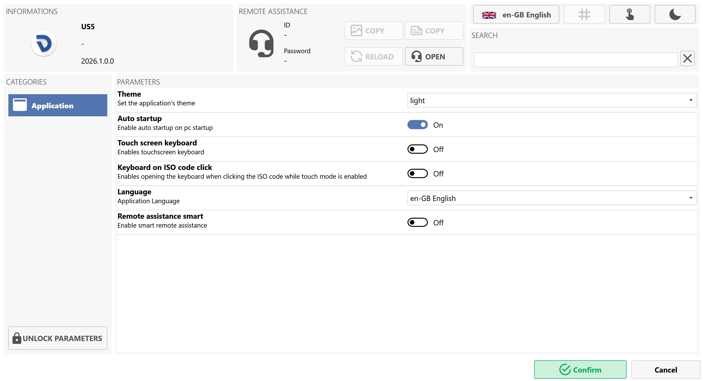
Informacionet
Në pjesën e sipërme majtas të panelit paraqiten informacione të përgjithshme për aplikacionin e instaluar dhe versionin aktual.
Asistenca në distancë
Ky seksion, i vendosur në pjesën e sipërme qendrore të panelit, i mundëson operatorit të kontaktojë asistencën dhe ofron veprimet e mëposhtme:
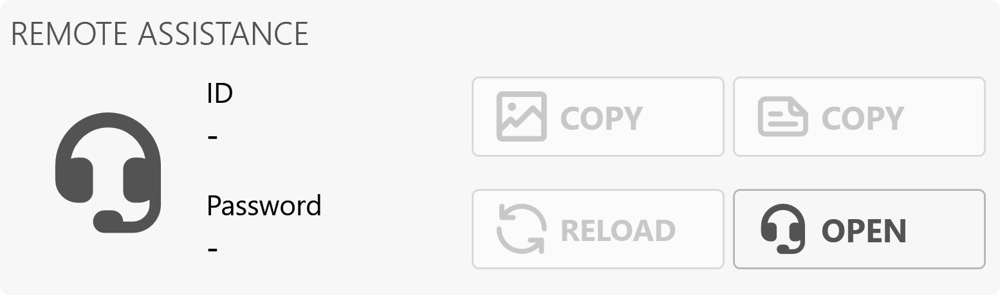
Shiriti i sipërm
Ky shirit ndodhet në pjesën e sipërme djathtas të panelit.

Gjuha e caktuar | |
 | Menaxhimi i ndërfaqes |
Tastierat me ekran me prekje | |
Tema e aplikacionit |
Kërko
Ky shirit ndodhet menjëherë poshtë shiritit të sipërm, përsëri në anën e djathtë të panelit.
Shiriti shfaqet si më poshtë:
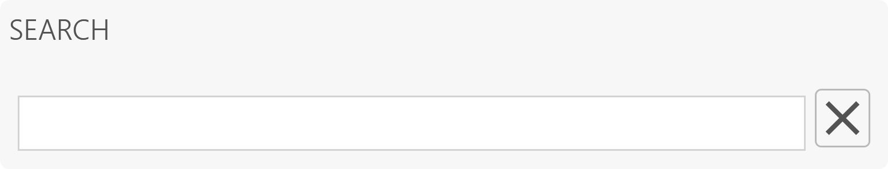
Kjo fushë teksti, pasi plotësohet siç duhet, mundëson kufizimin e rezultateve të paraqitura në seksionin parametrat, duke shfaqur vetëm ato që përmbajnë tekstin e futur, siç tregohet në imazhin e mëposhtëm shembull:
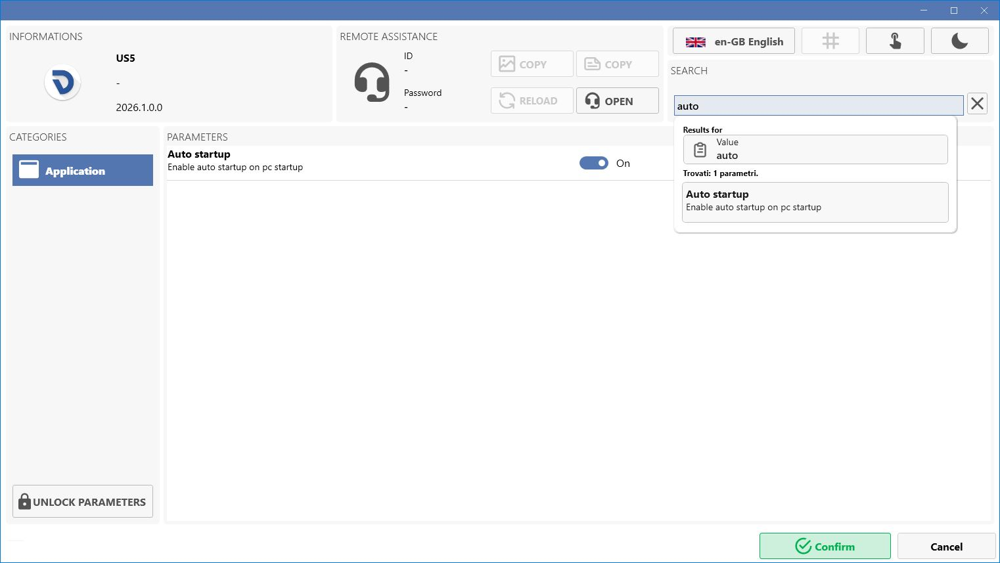
Kategoritë
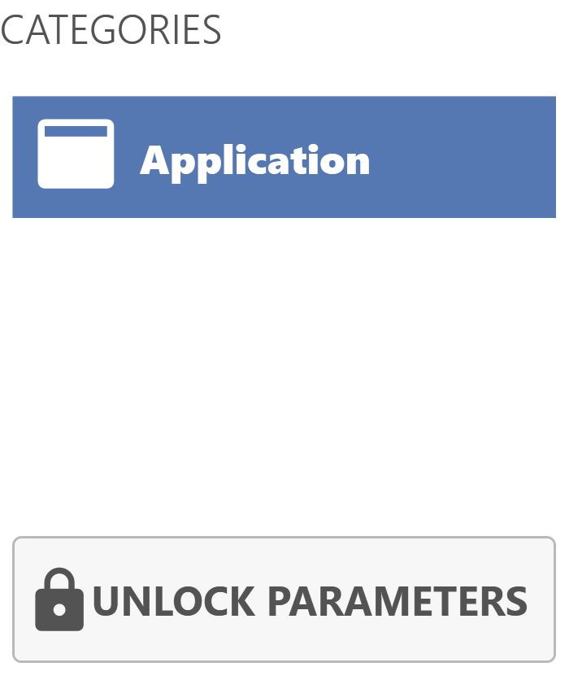
Parametrat
Ky seksion, që zë pjesën qendrore të panelit të parametrave, i mundëson operatorit të ndryshojë parametrat e kategorisë së zgjedhur aktualisht.

Kategoria Aplikacioni
Tema | Cakton temën e aplikacionit. |
Nisja automatike | Aktivizon nisjen automatike kur ndizet kompjuteri. |
Tastiera në ekran | Aktivizon tastierën në ekran. |
Tastiera kur klikohet kodi ISO | Aktivizon hapjen e tastierës kur klikohet kodi ISO ndërsa modaliteti ‘touch’ është aktiv. |
Gjuha | Gjuha e aplikacionit. |
Asistenca inteligjente në distancë | Aktivizon asistencën inteligjente në distancë. |
Shiriti i poshtëm
Ky shirit ndodhet në pjesën e poshtme djathtas të faqes.

Konfirmo | |
Anulo | Mbyll panelin e cilësimeve duke anuluar ndryshimet e mundshme të bëra nga operatori. |
Asistenca
Shtypja e butonit asistenca hap një panel të asistencës në distancë të ngjashëm me atë që paraqitet në imazhin e mëposhtëm:

Për të marrë asistencë në distancë drejtpërdrejt në makinë, operatori duhet t’i japë shërbimit të asistencës informacionet e mëposhtme të paraqitura në panel:
ID | Në imazhin shembull, numri menjëherë poshtë ID-ja juaj. |
Fjalëkalimi | Në imazhin shembull, grupi i karaktereve dhe numrave i vendosur menjëherë poshtë Fjalëkalimi. |
Fik / Rinis
Nga ky panel mund të kryhen veprimet e mëposhtme:
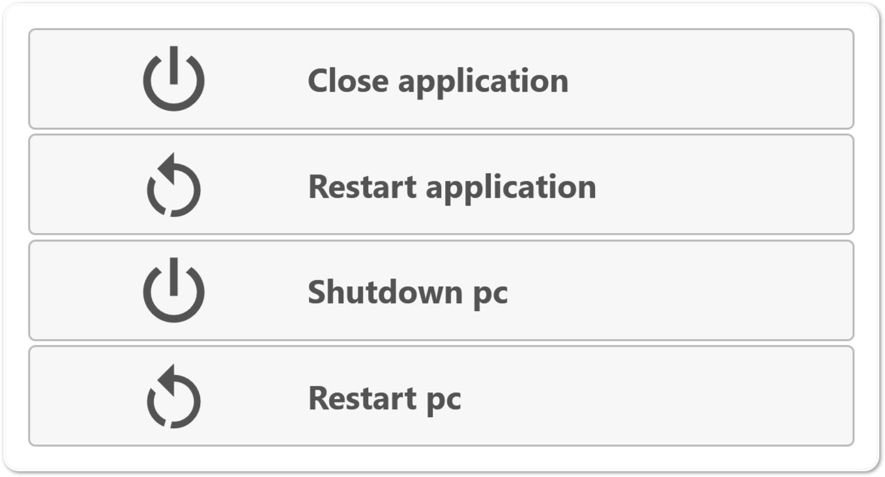
 | Mbyll aplikacionin |
 | Rinis aplikacionin |
| Fik sistemin |
| Rinis kompjuterin |
Shiriti anësor
Ky shirit anësor ndodhet në anën e djathtë të të gjitha faqeve të aplikacionit.
Dukshmëria e shiritit anësor | |
Home | |
Statistikat | |
 | Shërbimet |
CadCam |
Ndërfaqja Home shfaqet si më poshtë:

Komandat
Ky seksion ndodhet në pjesën e sipërme qendrore të ndërfaqes.
I mundëson operatorit të kryejë veprimet e mëposhtme:

 | Parkimi automatik |
 | Ndrysho veglën manualisht |
 | Rrota e dorës |
Modaliteti i punës
Seksioni i mëposhtëm ndodhet në pjesën e sipërme djathtas të ndërfaqes dhe i mundëson operatorit zgjedhjen e mëposhtme:

 | Manual |
 | Ekzekutim |
Boshtet
Ky seksion ndodhet në pjesën e sipërme majtas të ndërfaqes.
Forma dhe renditja e përmbajtjes së seksionit mund të ndryshojnë sipas modalitetit të zgjedhur të punës:
Manual
Me modalitetin e punës Manual , seksioni shfaqet si në imazhin e mëposhtëm shembull:

Butonat e boshteve
Vetëm në këtë modalitet pune janë të disponueshëm butonat e mëposhtëm:
 | Resetimi i boshtit |
 | Resetimi i origjinave X dhe Y |
 | Resetimi i origjinës Z |
 | Ul kuotën e boshtit |
 | Rrit kuotën e boshtit |
Ekzekutim
Me modalitetin e punës Ekzekutim , seksioni shfaqet si në imazhin e mëposhtëm shembull:

Komandat e boshteve
Ky seksion ndodhet menjëherë në të djathtë të seksionit Boshtetdhe mundëson veprimet e mëposhtme:

 | Koordinatat RTCP Procedura e funksionimit:
Lëvizja me komandën RTCP lejohet vetëm kur çelësi i koduar është futur në vendin e duhur, i cili gjendet në konsolën e operatorit.
|
 | MDI / MDI RTCP |
Origjina
Ky seksion ndodhet në pjesën e sipërme djathtas të ndërfaqes, menjëherë poshtë seksionit Modaliteti i punës.
I mundëson operatorit të shohë origjinat e boshteve dhe origjinat RTXP, si dhe të shohë e të ndryshojë origjinën aktive.

ISO
Ky seksion shtrihet në pjesën e poshtme majtas të ndërfaqes dhe i mundëson operatorit të menaxhojë skedarët ISO.
Kur ngarkohet një ISO, ndërfaqja merr pamjen e mëposhtme:

Shiriti i sipërm
 | Nis |
 | Ecuria |
 | Koha e parashikuar |
 | Trashësia |
Shiriti i poshtëm
 | Parapamja |
 | Pjesët |
 | Ekzekutim pa përpunim |
 | Testi ISO |
 | Zgjidh skedarin |
 | Ndrysho |
 | Automatik |
 | Kërkimi i bllokut |
Waterjet
Ky seksion ndodhet në pjesën qendrore djathtas të aplikacionit dhe i ofron operatorit mundësitë e mëposhtme:

Butonat e Tool Plus
 | Matja e veglës |
 | Rryma aktive e ujit |
 | Pompa aktive |
 | Presioni i lartë |
 | Abrazivi aktiv |
Parametrat e Tool Plus
 | Presioni i ulët |
 | Presioni i lartë |
 | Prurja e abrazivit |
 | Abrazivi në LP |
Shkrepja e fotos
Ky seksion ndodhet në pjesën e poshtme të ndërfaqes.
Në përgjithësi, ky funksion mundëson fotografimin e tavolinës së punës së makinës duke përdorur pajisjen fotografike të integruar.

 | Trashësia |
 | Shkrep foto |
Paneli i shkrepjes së fotos
Shtypja e kësaj ikone shkrep një foto dhe hap faqen e imazhit të marrë.
Nga kjo faqe mund ta hidhni ose ta ruani foton, duke përcaktuar shtegun e ruajtjes dhe trashësinë e dëshiruar.

Parametrat e ruajtjes
 | Emri i fotos |
 | Shtegu i ruajtjes së fotos |
 | Zgjidh shtegun e fotos |
Shkrep foto
| Trashësia |
| Shkrep foto |
Feed
Ky seksion ndodhet në pjesën e poshtme djathtas të ndërfaqes dhe mundëson shfaqjen e vlerës Feed, e cila përfaqëson lëvizjen e interpoluar të makinës.

Kur Tool Plus është aktivizuar, ndërfaqja e faqes qendrore ndryshon pamje.
/0.png)
Tool Plus
Ky seksion ndodhet në pjesën e sipërme djathtas të ndërfaqes dhe mundëson menaxhimin e Tool Plus:
/3.0.png)
Parametrat e Tool Plus
/3.3_b-20261023-053843.png) | Gjatësia |
/3.4_b-20261023-053756.png) | Diametri |
/3.5_b-20261023-053926.png) | RPM |
/3.6_b-20261023-054008.png) | Pragu i alarmit |
| Konsumi |
Butonat e Tool Plus
/PART_InnerGrid_System.Windows.Controls.Grid_28831760-20261023-140317.png) | Ndrysho modalitetin |
/3.8.png) | Mat veglën me sondë |
/3.9.png) | Ngritja |
/3.10.png) | Ulja |
/3.11.png) | Ndezja/Fikja e ujit |
/3.12.png) | Aktivizo/Çaktivizo rrotullimin |

Lloji i statistikave
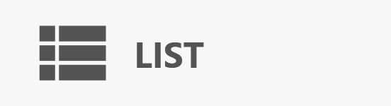 | Lista |
Grafiku |
Statistikat në listë
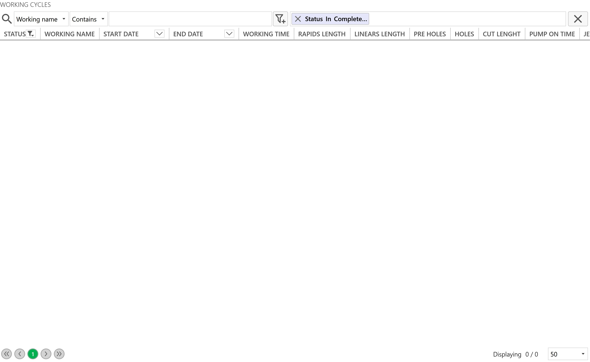
Statistikat në grafik
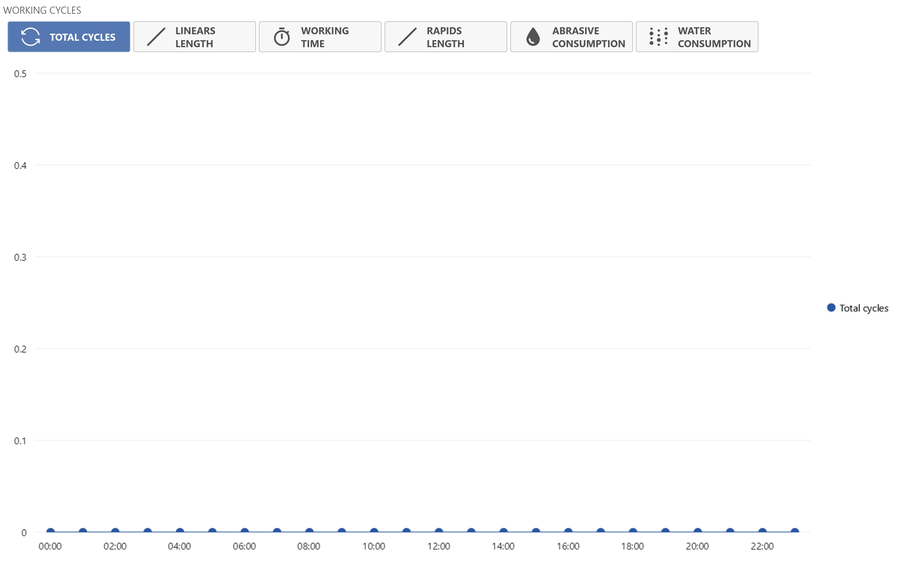
Filtri i datës
 | Filtri i datave |

Totalet e statistikave

Kohëmatësit

Në këtë faqe mund të qaseni te alarmet dhe mirëmbajtjet:
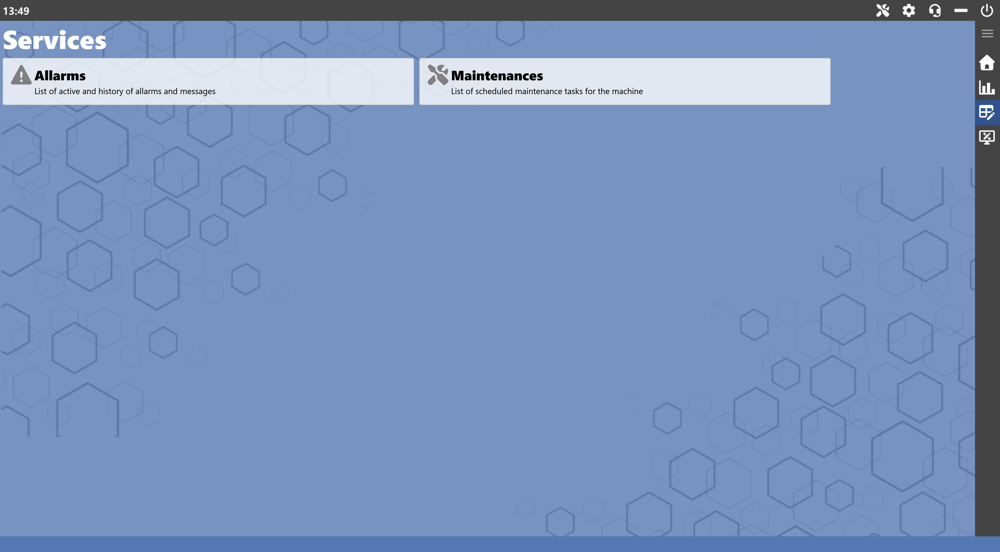
Shërbimet
Alarmet | |
 | Mirëmbajtjet |
Faqja e alarmeve

Shiriti i sipërm
Prapa | |
 | Përditëso |
 | Aktive |
 | Historiku |
Shembull i një alarmi aktiv
Imazhi i mëposhtëm tregon një shembull të një alarmi aktiv, ku ngjyra e sfondit të aplikacionit bëhet e kuqe:

Shembull historiku
Imazhi i mëposhtëm tregon një shembull historiku:

Butonat
Filtri i datave në historik
 | Filtri i datave |
Operatori mund të zgjedhë të shohë mesazhet e ditës, javës, muajit, vitit ose të një intervali të personalizuar.

DSC (Donatoni Share Content)
Alarmet DSC |
Faqja e mirëmbajtjeve
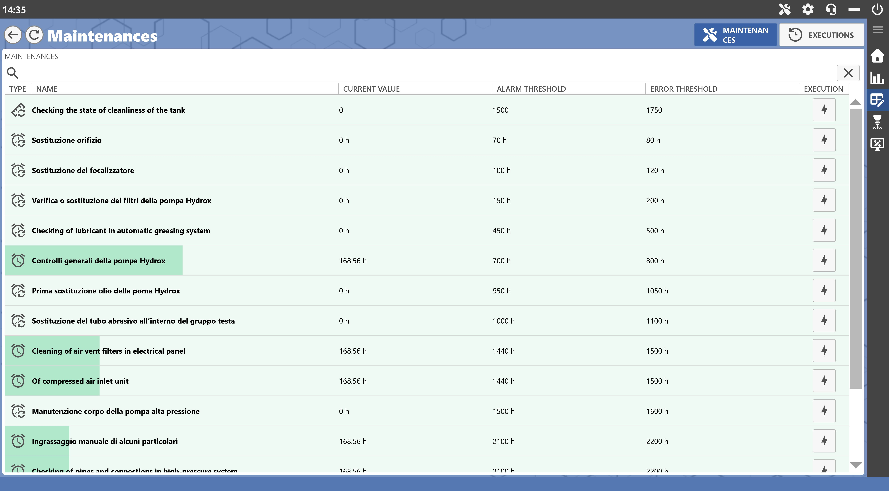
Shiriti i sipërm

 | Prapa |
 | Përditëso |
 | Mirëmbajtjet |
 | Ekzekutimet |
Mirëmbajtjet
Hap DSC |
Ekzekutimet
 | Filtri i datave |
Operatori mund të zgjedhë të shohë mirëmbajtjet e ditës, javës, muajit, vitit ose të një intervali të personalizuar.

Kjo ndërfaqe mund të hapet duke shtypur butonin e mëposhtëm në menynë anësore të djathtë:
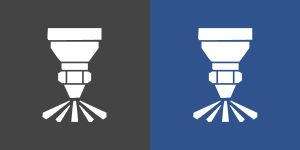 | Hydrofinish |
Imazhi i mëposhtëm tregon një shembull të ndërfaqes Hydrofinish:
/0.0.png)
Komandat
Ky seksion ndodhet në pjesën e sipërme qendrore të ndërfaqes.
I mundëson operatorit të kryejë veprimet e mëposhtme:
/1.0.png)
/1.1.png) | Parkimi automatik |
/1.2.png) | Ndrysho veglën manualisht |
/1.3.png) | Rrota e dorës |
Boshtet
Ky seksion ndodhet në pjesën e sipërme majtas të ndërfaqes.
/2.0-20261022-094915.png)
Butonat e boshteve
Vetëm në këtë modalitet pune janë të disponueshëm butonat e mëposhtëm:
/3.6.png) | Resetimi i boshtit |
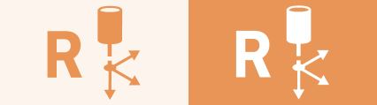 | Resetimi i origjinave X dhe Y |
/3.8.png) | Resetimi i origjinës Z |
Tool Plus
Ky seksion ndodhet në pjesën e sipërme djathtas të ndërfaqes dhe mundëson menaxhimin e Tool Plus:
/3.0.png)
Parametrat e Tool Plus
/3.3_b-20261023-053843.png) | Gjatësia |
/3.4_b-20261023-053756.png) | Diametri |
/3.5_b-20261023-053926.png) | RPM |
/3.6_b-20261023-054008.png) | Pragu i alarmit |
| Konsumi |
Butonat e Tool Plus
/PART_InnerGrid_System.Windows.Controls.Grid_28831760-20261023-140317.png) | Ndrysho modalitetin |
| Mat veglën me sondë |
/3.9.png) | Ngritja |
/3.10.png) | Ulja |
/3.11.png) | Ndezja/Fikja e ujit |
/3.12.png) | Aktivizo/Çaktivizo rrotullimin |
Origjina
Ky seksion ndodhet në pjesën e sipërme djathtas të ndërfaqes, poshtë shiritit të sipërm:
/4.0.png)
Hydrofinish
Ky seksion ndodhet në pjesën e poshtme majtas të ndërfaqes dhe mundëson menaxhimin e parametrave të përpunimit Hydrofinish:
/5.0.png)
Lloji i kalimeve Hydrofinish
/5.2.0.png)
/5.2.1.png) | Konturi |
/5.2.2.png) | Kalimet horizontale |
/5.2.3.png) | Kalimet vertikale |
/5.2.4.png) | Kalimet zigzag |
/5.2.5.png) | Hapi nga e majta në të djathtë |
/5.2.6.png) | Hapi nga lart poshtë |
/5.2.7.png) | Hapi Zigzag X |
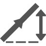 | Hapi Zigzag Y |
Parametrat Hydrofinish
/5.3.0.png)
/5.3.1.1_b-20261023-055450.png) | Përmasa horizontale |
/5.3.1.2_b-20261023-055538.png) | Përmasa vertikale |
Ofseti i brendshëm | |
/5.3.2.1_b-20261023-055706.png) | Z e përpunimit |
| Z e afrimit |
/5.3.2.3_b-20261023-055746.png) | Shpejtësia e punës |
/5.3.2.4_b.png) | Shpejtësia e afrimit |
Shiriti i poshtëm Hydrofinish
Automatik | |
/5.4.2.png) | Ngarko recetën |
Ruaj recetën |
Ngarko recetën
Paneli për ngarkimin e një recete shfaqet fillimisht si më poshtë:
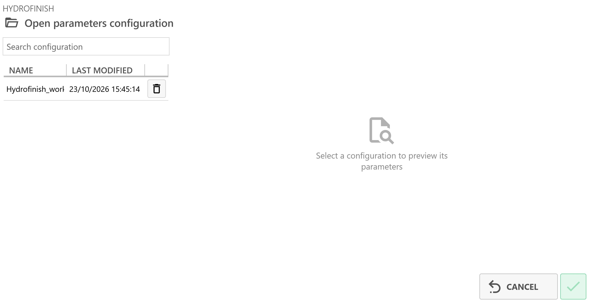
Pas zgjedhjes së një recete, shfaqet një pamje paraprake e vlerave:
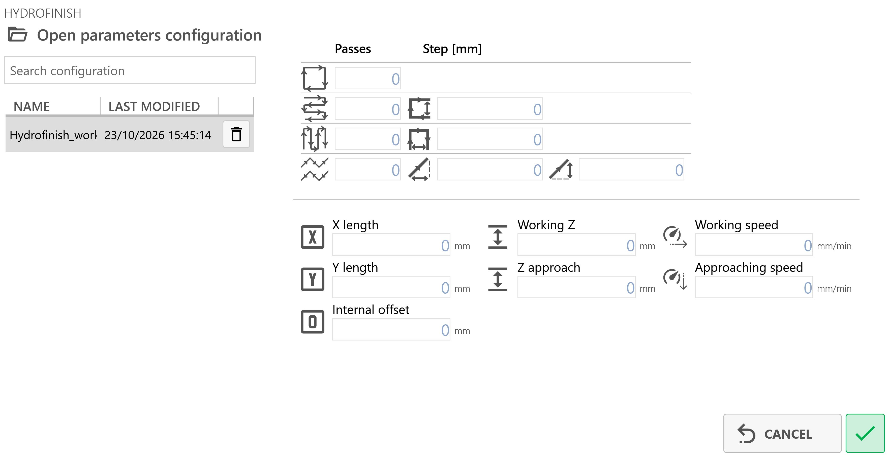
/5.5.3.1-20261023-135238.png) | Anulo |
/5.5.3.2-20261023-135146.png) | Konfirmo |
Waterjet
Ky seksion ndodhet në pjesën qendrore djathtas të aplikacionit dhe i ofron operatorit mundësitë e mëposhtme:
/6.0.png)
Butonat e Tool Plus
/7.3_on.png) | Matja e veglës |
/7.1_off-20261022-115614.png) | Rryma aktive e ujit |
/7.1_on-20261022-115711.png) | Pompa aktive |
/7.2_off-20261022-115711.png) | Presioni i lartë |
/7.8_off-20261022-120040.png) | Abrazivi aktiv |
Parametrat e Tool Plus
/7.4_a-20261022-115933.png) | Presioni i ulët |
Presioni i lartë | |
/7.6_a-20261022-115934.png) | Prurja e abrazivit |
/7.9-20261023-145712.png) | Abrazivi në LP |
Feed
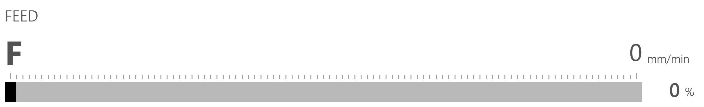
Kur hapet aplikacioni, do të shfaqet një ndërfaqe e ngjashme me këtë:
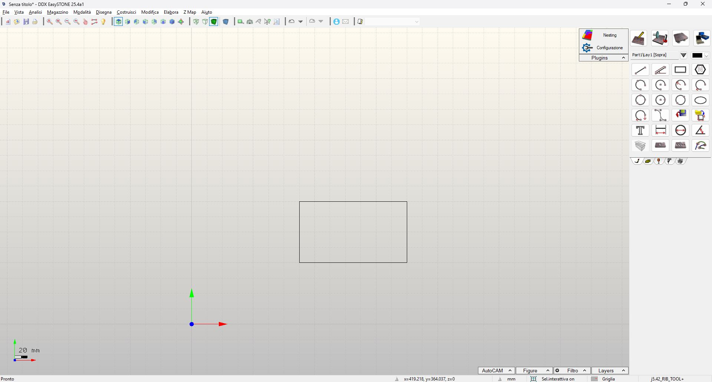